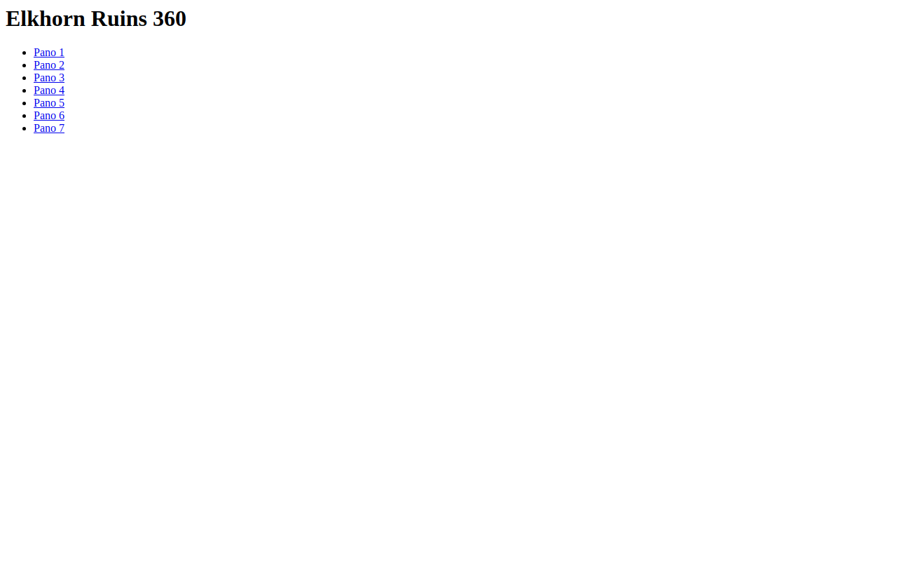

Try it right here
This loads the live project from its own domain, exactly as a visitor would see it.
What it does
The site of Roosevelt's Dakota ranch house, captured in seven equirectangular panoramas and served through a minimal drag-and-pinch viewer. The viewer libraries are vendored locally — no CDN, no build step, no API keys.
Be clear-eyed about what this is: a working proof of concept, not a finished visitor product. There are no captions, no hotspots, no navigation between panoramas, and no branding. What it does give you is the shortest possible path from a 360 camera to a shareable web experience, which is exactly the thing most institutions overestimate the difficulty of.
What it can do
- Seven full-screen drag-and-pinch 360-degree panoramas
- Viewer libraries vendored locally — no CDN dependency
- No API keys, no accounts, no build step
- Custom domain on GitHub Pages with a working certificate
- Deliberately minimal — about fifteen lines of page code per panorama
Make it your own
Start by forking the repository into your own organization. Everything below assumes you are working in your fork, not this one.
- Fork the repo. There is no README to follow — these steps come from reading the files.
- Shoot or export your own equirectangular (2:1) panoramas into
panos/as1.jpg,2.jpg, and so on. Keep them web-sized; the current files run about 4.5 MB each. - Copy an existing
N.htmlfor each panorama and change the one line that names the image file. - Edit
index.htmlto list your panoramas with real names, and add your own branding — there is none today. - Edit
CNAME, add the DNS record, and enable Pages frommainat the root.
Stuck on a step? Open an issue on the repository. Questions from people adapting these for their own institution are the most useful feedback we get.